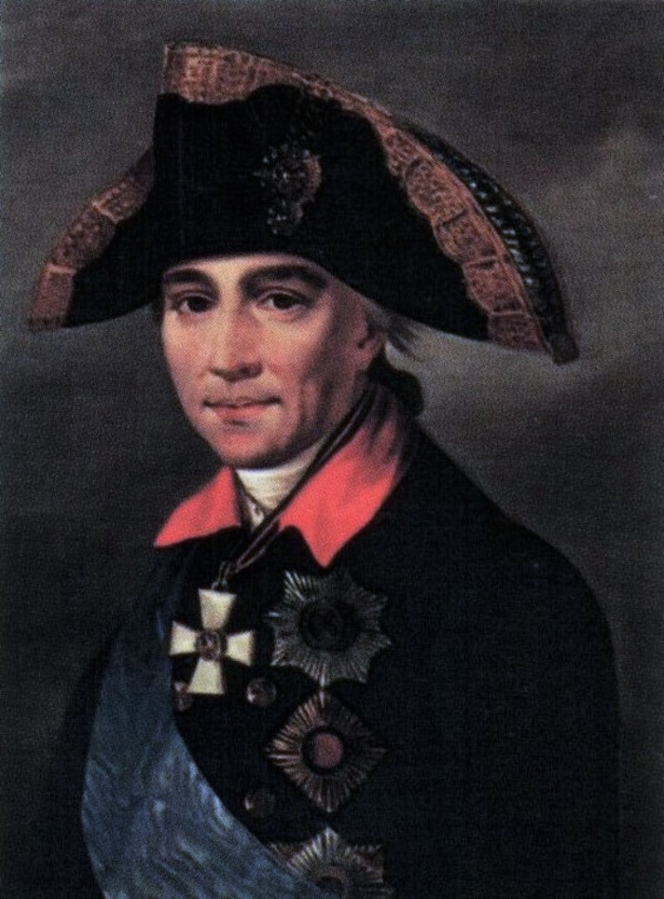
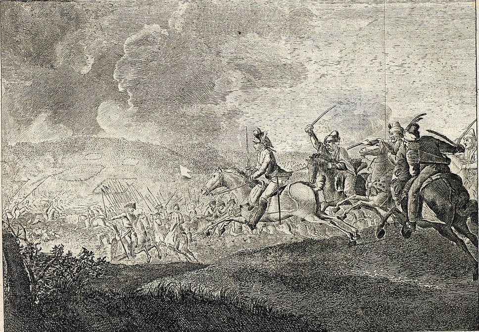

Кампания 1774 года стала решающей в ходе Русско-турецкой войны 1768—1774 годов, определив исход затянувшегося противостояния. Главные боевые действия развернулись на Балканском театре, где русские войска под руководством генерал-фельдмаршала Петра Румянцева продолжили продвигаться вперёд, стремясь закрепить ранее достигнутые успехи. Сосредоточив усилия на прорыве обороны османских сил, российские полководцы умело использовали тактические преимущества: чёткое взаимодействие родов войск, быстрые манёвры и внезапные атаки позволили прорвать сопротивление противника.
Одним из ключевых событий кампании стало сражение при Козлудже (20 июня 1774 года), где русские части нанесли решительное поражение крупной турецкой армии. В этом успехе значительную роль сыграл талант руководителей, в том числе Александра Суворова и Михаила Каменского, которые действовали под общим начальством Румянцева. Победа при Козлудже окончательно подорвала боевой дух османских войск и продемонстрировала полную бесперспективность дальнейшего сопротивления. Османская империя оказалась вынуждена пойти на уступки, начав переговоры о мире.

Михаил Федотович Каме́нский

ИТОГИ КАМПАНИИ
По итогам войны Крым был объявлен независимым от Турции, а Россия получила территории, включая Большую и Малую Кабарду, Азов, Керчь и Еникале. Русские корабли получили право свободного прохода по турецким водам, а русские подданные — доступ к священным местам. Турция признала титул русских императоров и предоставила амнистию и свободу вероисповедания балканским христианам. Россия согласилась на размещение своего представителя при дворе султана и обязалась вывести войска из Грузии и Мингрелии. Турция должна была выплатить России 4,5 млн рублей за военные издержки в течение трех лет.
Кючук-Кайнарджийский мир, утвержденный 13 января 1775 года, оказался невыгодным для Турции и не обеспечил долгосрочного мира. Турция уклонялась от выполнения условий договора, что способствовало ослаблению Османской империи и росту влияния России на Балканах и Кавказе. Договор стал началом процесса присоединения к России Северного Причерноморья, Крыма и Кубани, что способствовало экономическому и демографическому развитию южных территорий империи.

территориальных приобретений по Кючук-Кайнарджийскому договору